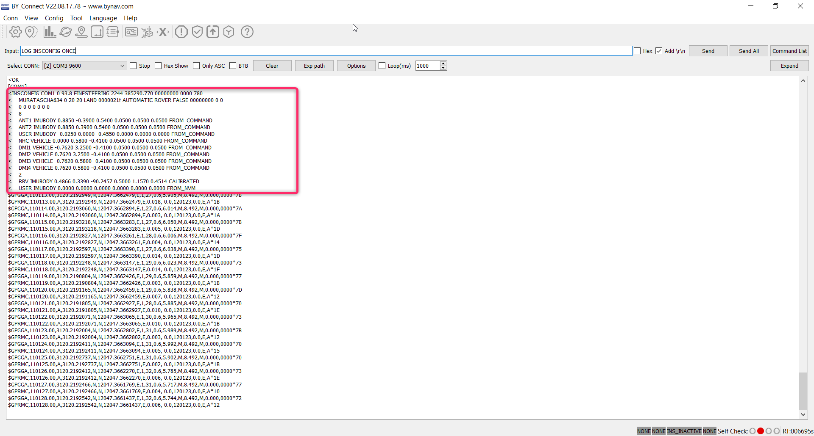
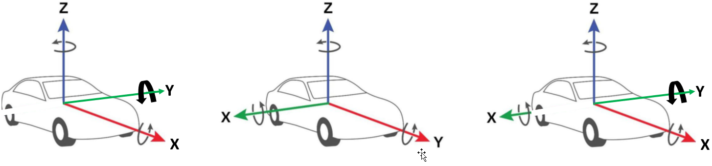
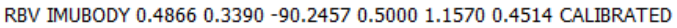
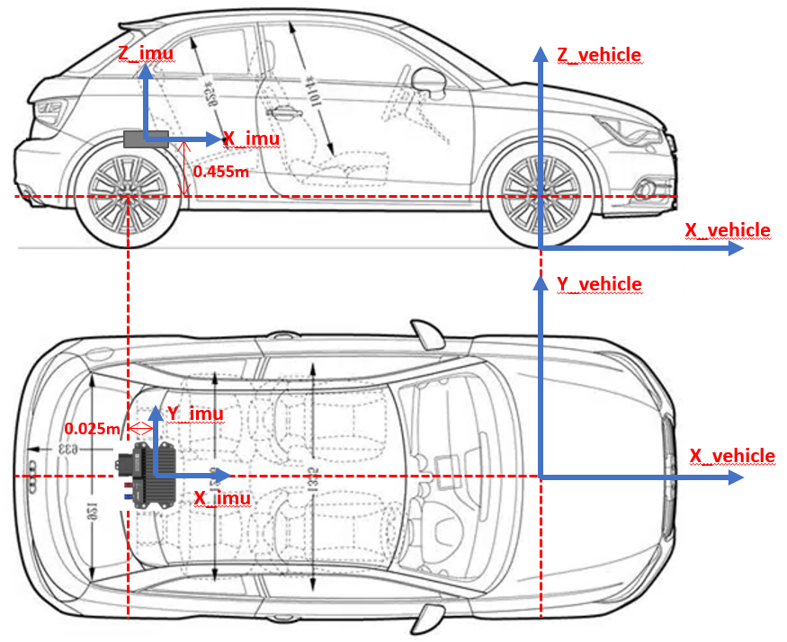
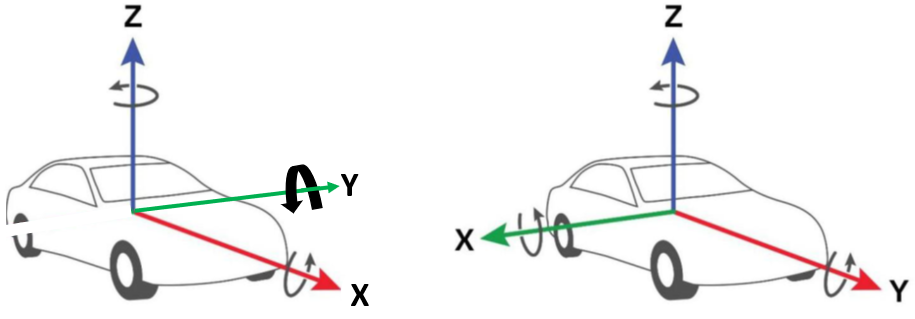
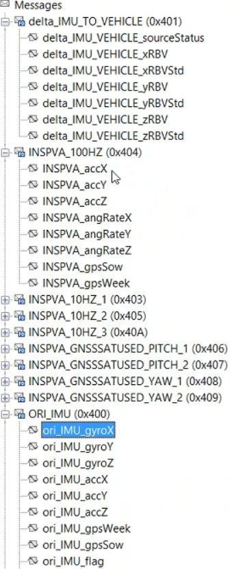

bynav X2 calibration
Appendix：RBV Calibrate result of ENG_VEHICLE
Appendix: Correlation between IMU configuration and CANFD Signal output
one, UG031_x2 rotation parameter calibration
Calibration step
Confirm that the X2 has been configured correctly, including the precise rod arm and the approximate RBV value (accuracy is better than 5 degrees), pass SETINSROTATION RBV Instruction manual configuration rotation angle
X2 is working normally, and has completed the accuracy and error convergence
Use Inscalibrate instructions to enable RBV calibration INSCALIBRATE RBV NEW
To monitor and calibrate, use instructions LOG INSCALSTATUS ONTIME 1
Keep the carrier on the horizontal ground along the straight line, and the speed must be greater than 5m/s (18 km/h) to avoid driving on complex roads to prevent the introduction of additional estimated errors.
After the school is completed, the RBV's estimation value will be automatically configured, and the offset of the calibration can be used. INSCALSTATUS and LOG INSCONFIG View instructions, you need to store manually ( SAVECONFIG Instruction) to ensure the next boot use
20230112 4#Engineering vehicle IMU calibration results

Second, coordinate system conversion
IMU coordinate system (Left) → Body coordinate system (middle)
→
Vene coordinate system (right)


RBV Imubody Rotating Parameters: Rotary Euler Corner of the IMU coordinate system to the Body coordinate system
The rotating Euler Corner (Z+90) of the IMU coordinate system to the vene coordinate system: X_roll=0.4866 Y_pitch=0.339 Z_yaw=-0.2457 degree
The translation cannot be calibrated, and the installation design value (relative to the center of the vehicle rear axis center ） X=0.025 Y=0.0 Z=0.455 m
IMU installation location schematic diagram

3. Messages
according to RBV IMUPBODY Configuration delta_IMU_TO_VEHICLE ,Will ORI_IMU (Left) Turn into INSPVA (right)


Reference information
BY_Connect_Upper-computer_Software.zip Please go to the official website to download https://www.bynav.com/cn/products/gnss-ins-integration/x2.html